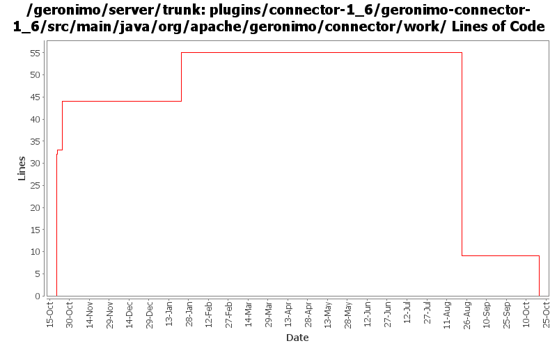

[root]/plugins/connector-1_6/geronimo-connector-1_6/src/main/java/org/apache/geronimo/connector/work

| Author | Changes | Lines of Code | Lines per Change |
|---|---|---|---|
| djencks | 18 (100.0%) | 102 (100.0%) | 5.6 |
move packages to avoid split-packagle problems with tx components
0 lines of code changed in 4 files:
update to spec
2 lines of code changed in 5 files:
GERONIMO-4360 some implementation of connector 1.6 features, pretty much untested
55 lines of code changed in 3 files:
GERONIMO-4360 security modifications for connector 1.6
11 lines of code changed in 3 files:
GERONIMO-4360 set up some flags for easy switching between connector versions
2 lines of code changed in 1 file:
GERONIMO-4360 make copy of connector plugin area for 1.6 spec implementation work. Hopefully the diff part of this change can be reverted when we actually move to 1.6 spec
32 lines of code changed in 2 files: